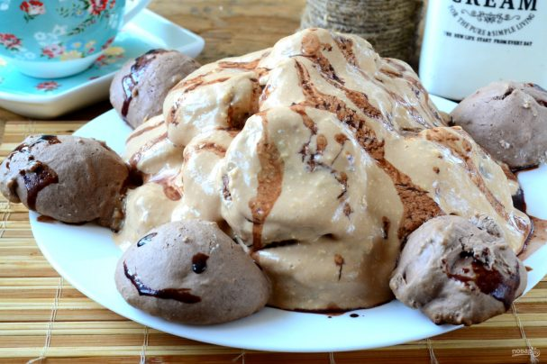
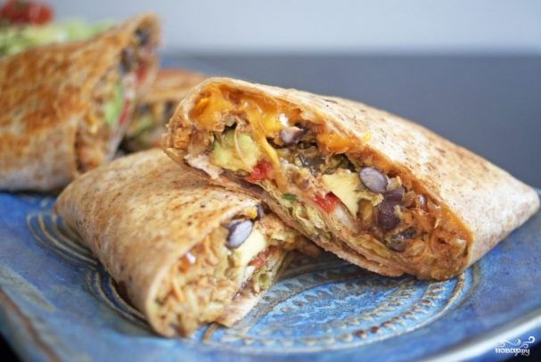
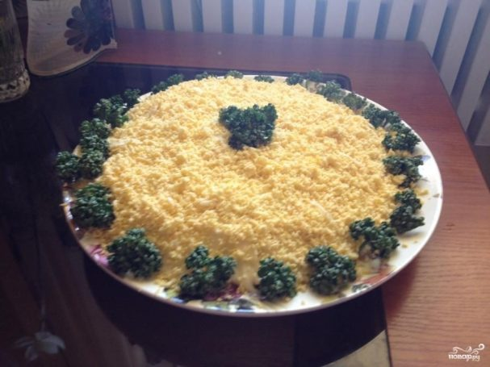
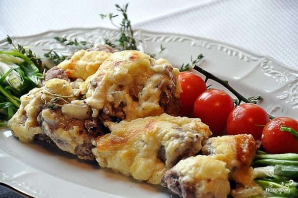
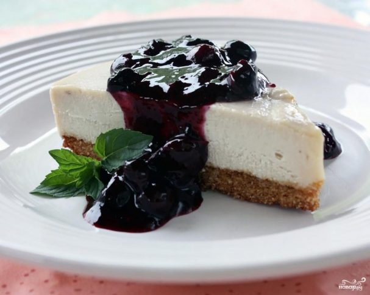
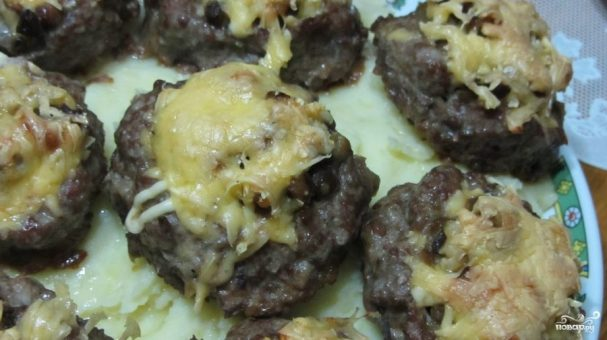
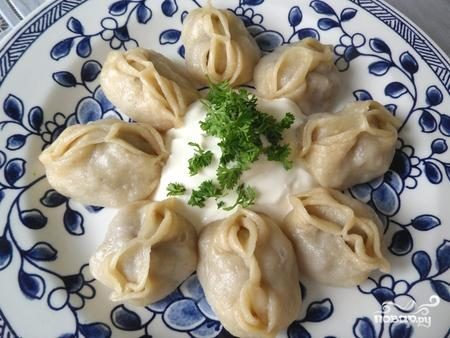

Топ 10 рецептов
1. Салат Цезарь с курицей и сухариками
Ингредиенты:
- Куриное филе — 150
- Помидор — 1 Штука
- Яйцо — 2 Штуки
- Хлеб белый — 2
- Листья салата — 4-5 Штук
- Оливковое масло — 2 Ст. ложки
- Лимонный сок — 1 Ст. ложка
- Горчица — По вкусу
- Кунжутные семечки — 2 Щепотки
Как приготовить "Салат Цезарь с курицей и сухариками"

1. Подготовьте все необходимые ингредиенты. Яйца отварите вкрутую.

2. Куриное филе порежьте на небольшие по размеру пластины толщиной 5-6 мм. и обжарьте в небольшом количестве растительного масла до золотистой корочки. Идеально, если вы будете жарить их на гриле.

3. Хлеб порежьте на небольшие кубики и подсушите в духовке или микроволновке.

4. Помидор очистите и порежьте нетолстыми дольками.

5. Соберите салат. На дно тарелки положите промытые листья салата, сверху положите помидоры, сухарики, порезанные дольками яйца и кусочки курицы.

6. Подготовьте заправку: смешайте в небольшой креманке свежевыжатый лимонный сок, горчицу и немного оливкового масла. Полейте готовой смесью салат, присыпьте кунжутными семечками. Они хоть и не входят в классический вариант салата «Цезарь», очень хорошо сочетаются с овощами и придают салату пикантность. Подавайте салат в качестве закуски перед основным блюдом или в качестве главного блюда. Приятного аппетита!
2.Торт "Черепаха"
Ингредиенты:
- Яйца — 6 Штук
- Сахар — 1,5 Стакана
- Какао — 2 Ст. ложки
- Сода — 1 Чайная ложка
- Мука — 2,5-3 Стакана
- Сметана — 400 Грамм
- Сливочное масло — 100 Грамм
- Сгущенка вареная — 200 Грамм
- Шоколад (шоколадная глазурь) — 100 Грамм
Как приготовить "Торт "Черепаха"

1. Подготовьте все необходимые ингредиенты.

2. Яйца взбейте с сахаром, как на бисквит, до пышной пены. На это уйдет примерно 8-10 минут.

3. Яичная масса готова.

4. Всыпьте в нее соду или разрыхлитель, перемешайте.

5. Добавьте какао и сначала 1 стакан муки, взбейте миксером. Затем всыпьте оставшуюся муку и снова взбейте миксером.

6. В оригинальном рецепте муки меньше, но испробовав один раз, я поняла, что нужно добавить больше муки, тогда тесто станет более густым, не будет расплываться по противню, и коржики получатся более ровными.

7. Выложите тесто ложкой на противень, застеленный пергаментом. Выпекайте в предварительно разогретой до 200 градусов духовке 10 минут.

8. Тем временем приготовить крем. Смешайте сметану, вареную сгущенку и размягченное сливочное масло.

9. Взбивайте миксером на большой скорости, пока все не превратится в однородную гладкую массу. Крем готов!

10.Готовые коржики выньте из духовки и остудите. Затем отложите в сторону 5 коржиков, а остальные обмакните в крем и выложите на блюдо в форме горки.

11. Из оставленных коржиков сделайте голову, лапы, хвост. Шоколадом или глазурью нарисуйте глазки и рот.

12. Остатками крема залейте торт, украсьте шоколадной глазурью. Торт готов, теперь ему нужно пропитаться. Отправьте его в холодильник на 2-4 часа. Приятного чаепития!
3. Бурито
Ингредиенты:
- Говяжий фарш — 500 Грамм
- Лепешки — 8 Штук
- Подсолнечное масло — 2 Ст. ложки
- Бобы — 400 Грамм (обжаренные )
- Салат — 1 Штука
- Помидоры — 5 Штук
- Зеленый лук — 1 Штука
- Сыр чеддер — 200 Грамм
- Лук — 2 Штуки
- Порошок чили — 2 Чайных ложки
- Тмин — 1 Чайная ложка
- Соль — 1 Штука (по вкусу)
- Перец — 1 Штука (по вкусу)
Как приготовить "Бурито"

1. Ингредиенты:

2. Обжарить лук на среднем огне в течении 10 минут. В это время смешайте специи в пасту с небольшим количеством воды.

3. Добавить пасту в лук и готовить еще в течении 5 минут.

4. Добавить фарш.

5. Добавить бобы и приправить солью и перцем по вкусу.

6. Когда мясо будет готово, нарезаем помидоры, салат и зеленый лук.

7. Заправляем начинку в лепешки.

8. Добавляем тертый сыр. Складываем Бурито так, как показано на фотографии.

9. Укладываем Бурито в форму.

10.Накрываем фольгой и выпекаем в течении 40 минут.
4. Салат "Мимоза" классический
Ингредиенты:
- Рыбные консервы в масле — 200 Грамм (1 банка лучше сайры)
- Картофель — 300 Грамм (4 средних картофелины)
- Морковь — 200 Грамм (4 средних морковки)
- Лук — 100 Грамм (2 средних луковицы)
- Сыр — 150 Грамм (Твёрдого сорта)
- Майонез — 250 Грамм
- Яйца — 4 Штуки
- Зелень — 50 Грамм (Укроп или петрушка)
Как приготовить "Салат "Мимоза" классический"

1. Первым делом нужно отварить картофель, морковь и яйца. Отваренные продукты остудить и почистить. На мелкой тёрке натереть картошку, морковку, белки, желтки и сыр (всё в отдельных мисочках или тарелках). В салатницу выложить рыбу с маслом и размять вилкой по всей поверхности дна посуды. Сверху смазать небольшим количеством майонеза.

2. На рыбу сверху разложить натёртые белки, смазать майонезом.

3. Сверху на белки выложить натёртую морковь и опять смазать небольшим слоем майонеза.

4. Лук мелко нарезать, залить кипятком и дать настояться в течении 5-10 минут для удаления горечи. Сверху на морковь положить лук, на лук - картофель, немножко посолить и смазать майонезом.

5. Сверху мелко натереть сыр и смазать майонезом.

6. Последний слой - украшение салата натертыми желтками и зеленью. Перед подачей на стол дать настояться и пропитаться в холодном месте в течение 2 часов. Приятного аппетита!
5. Мясо по-французски с картофелем
Ингредиенты:
- Свинина — 500 Грамм
- Грамм Крупная луковица — 3 Штуки
- Картофель — 1 Килограмм
- Сыр — 200-250 Грамм
- Растительное масло — - По вкусу
- Майонез — - По вкусу
- Соль и молотый перец — - По вкусу
Как приготовить "Мясо по-французски с картофелем"

1. Картофель чистим, режем на тонкие пластины и укладываем на противень, смазанный маслом.

2. Лук чистим, нарезаем тонкими кольцами и равномерно укладываем поверх картофеля. Солим, перчим.

3. Мясо нарезаем кубиками размером примерно 2 на 2 см, можно чуть крупнее. Выкладываем на овощи, еще раз солим, перчим.

4. Щедро поливаем мясо майонезом.

5. И, наконец, обильно посыпаем блюдо тертым сыром.

6. Ставим противень в духовку, разогретую до 180 градусов, и запекаем до готовности - в зависимости от духовки и величины нарезки, это может занять от 45 минут до 1 часа.

7.Приятного аппетита! :)
6. Кисло-сладкий соус
Ингредиенты:
- Лук — 2 Штуки (небольшой)
- Корень имбиря — 1 Штука (небольшой кусочек)
- Чеснок — 2 Зубчика
- Растительное масло — 2 Ст. ложки
- Сухое белое вино — 2 Ст. ложки
- Соевый соус — 2 Ст. ложки
- Уксус — 1 Ст. ложка
- Томатный соус — 3 Ст. ложки
- Сахар — 2 Ст. ложки
- Фруктовый сок — 125 Миллилитров (апельсиновый/ ананасовый )
- Крахмал — 1 Ст. ложка
- Вода — 2 Ст. ложки
Как приготовить "Кисло-сладкий соус"

1. Подготовьте необходимые продукты. Лук, чеснок, имбирь очистите.

2. Мелко нарежьте лук, чеснок, имбирь. Обжарьте на разогретом растительном масле в течение 2 минут, периодически помешивая.

3. Соедините соевый соус, уксус, вино, томатный соус, сахар, фруктовый сок (можно использовать как ананасовый, так и апельсиновый) в небольшой кастрюле. Доведите до кипения. Смешайте крахмал с водой и соедините с соусом.

4. Влейте смесь в сковороду к пассерованным овощам. Помешивая, готовьте до нужной вам густоты соуса. .

5. Для более нежной консистенции соуса пробейте его в блендере. Вот и все. Удачи!
7. Чизкейк творожный
Ингредиенты:
- Мука — 230 Грамм (Желательно просеять)
- Сахар — 250 Грамм (Желательно коричневый)
- Сливочное масло — 65 Грамм
- Вода — 20 Миллилитров
- Яйца — 5 Штук
- Молоко — 3 Ст. ложки
- Творог — 900 Грамм (Желательно обезжиренный)
- Ванильный порошок — 1 Щепотка
- Лимон — 1 Штука
- Соль — 1 Щепотка
Как приготовить "Чизкейк творожный"

1.Для теста основы нам понадобится: 200 г. муки (лучше просеянной), 65 г. сахара, 65 г. сливочного масла. Все ингредиенты тщательно перемешиваем в специальной миске. К полученной массе добавляем 20 мл. воды.

2. Необходимо вымесить твёрдое тесто. Если тесто липкое, советую его положить на некоторое время в холодильник.

3. В форму для выпечки помещаем заранее вырезанную пергаментную бумагу, предназначенную для выпечки. Готовое тесто размещаем на вырезанный круг бумаги и раскатываем до концов окружности. Готовый круг из теста и бумаги размещаем в форме для выпечки и формируем бортики. Тесто выпекаем в духовом шкафу 8-10 минут при температуре 180 градусов.

4. Для приготовления начинки нам понадобится: 5 яиц, 180 г. сахара, лимонный сок и щепотка соли, 2 ст. ложки муки и 3 ст. ложки молока, 900 г. творога, цедра 1 лимона. Желтки отделить от белков. Желтки смешать с сахаром, а белки взбить с лимонным соком и щепоткой соли до образования пены. В отдельной посуде смешать муку и молоко до образования густой массы.

5.К взбитым белкам добавить мучную массу, ванильный порошок по вкусу и творог - всё тщательно смешать. К полученной однородной массе добавить цедру одного лимона и хорошо перемешать.

6. Начинку размещаем внутри выпеченной основы. Поставить пирог в духовой шкаф и выпекать до золотистой корочки при температуре 180 гр.

7.Творожный чизкейк готов. Подавать охлаждённым, блюдо можно украсить шариками мороженного, покрытыми тёртым шоколадом. Приятного аппетита!
8. Котлеты "Гнезда"
Ингредиенты:
- Фарш свино-говяжий — 1 Килограмм
- Яйцо — 1 Штука
- Шампиньоны — 800 Грамм
- Луковица — 2 Штуки
- Сыр твердый — 300 Грамм
- Майонез — - По вкусу
- Масло растительное — - По вкусу
- Соль, перец — - По вкусу
Как приготовить "Котлеты "Гнезда"

1. Сперва необходимо приготовить фарш. Для этого смешиваем фарш, перекрученную через мясорубку одну луковицу, яйцо, соль и перец. Хорошенько вымешиваем, затем из получившегося фарша формируем крупные котлеты.

2. В сковороде разогреваем масло. Обжариваем котлеты с одной стороны в течение 1-2 минут на быстром огне. Нам нужно, чтобы одна сторона котлет покрылась корочкой, но сами котлеты остались сырыми внутри.

3. Переворачивать не нужно. Обжариваем только с одной стороны.

4. Выкладываем обжаренные с одной стороны котлеты на противень, смазанный маслом. Корочкой вниз. Руками делаем углубления в центре котлет, формируя "гнезда".

5. Из указанного количества ингредиентов получается целый противень красивых гнездышек. Параллельно этому, обжариваем до мягкости мелко нарезанные грибы и вторую луковицу.

6. В ямочки выкладываем обжаренные грибы. Сверху слегка смазываем майонезом (по желанию) и посыпаем сыром.

7.Ставим противень в духовку, разогретую до 190 градусов, и запекаем приблизительно 35 минут до полной готовности. Подавать в горячем виде. Приятного аппетита!
9. Манты
Ингредиенты:
- Яйцо — 1 Штука
- Соль — 1 Чайная ложка
- Вода — 1 Стакан (теплая)
- Говядина — 2 Килограмма (ингредиенты для мясной начинки)
- Луковица — 4 Штуки
- Черный перец — 1/2 Чайных ложки
- Тмин — 1 Чайная ложка
- Соль — 1 Чайная ложка
- Картофель — 1 Штука
Как приготовить "Манты"

1. В средней миске смешать вместе сухие ингредиенты для теста. Сделать углубление посередине и залить теплой водой, добавить 1 яйцо. Месить в течении 5-6 минут. Обложите тесто пленкой и дайте постоять в течении 10-20 минут.

2. Нарезаем мясо маленькими кусочками. Так же можно использовать мясорубку, чтобы сделать фарш.

3. Нашинковать лук.

4. Добавить специи.

5.Добавить масло и хорошо смешать лук с мясом.

6.Начинка готова. Можно было добавить мелко нарезанный картофель, но это не является обязательным шагом.

7. Раскатать тесто. Присыпать мукой, чтобы избежать слипания. Сложить в длинную широкую полоску.

8.Нарезать на квадраты...

9. ... и разделить на единичные прямоугольники.

10. Поместить начинку на прямоугольники из теста. Запечатать по углам с четырех сторон.

11. Поместить начинку на прямоугольники из теста. Запечатать по углам с четырех сторон.

12. Доведите воду в пароварке до кипения. Поместите манты в многоуровневую пароварку. Готовить в течении 45 минут.

13. Блюдо готово! Приправляем черным молотым перцем и сметаной. Приятного аппетита!
10. Мисо суп
Ингредиенты:
- Даси — 1,5 Чайных ложки
- Мисо — 0,5 Стакана (Белая соевая паста)
- Тофу — 0,5 Стакана (Порезанный кубиками)
- Зелёный лук — 2 Ст. ложки (Мелко нарезанный)
- Вода — 4 Стакана
- Морские водоросли — 1 Ст. ложка (Сухие водоросли предназначенные для супа мисо)
Как приготовить "Мисо суп"

1. Налейте воду в кастрюлю и доведите до кипения. Добавьте гранулы даси и размешивайте до однородной массы.

2. Переключите плиту на средний огонь и добавьте в суп тофу.

3. В сушёные водоросли добавьте немного воды и подождите пока они размокнут. Отожмите лишнюю воду и добавьте водоросли в кастрюлю с супом. Кипятите на медленном огне в течение 2 минут.

4. Выложите в миску пасту мисо. Зачерпните половину ковша бульона даси и добавьте в миску с мисо. Размешайте бульон с пастой до однородной массы.

5. Выключите огонь, добавьте пасту мисо в бульон и хорошо перемешайте. Перед подачей на стол украсьте блюдо нарезанным зелёным луком. Приятного аппетита!